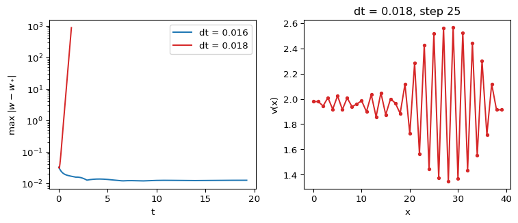

Explicit Euler is simple, but it is only conditionally stable for diffusion. If \(dt\) is too large for the grid, the simulation produces a pattern that is not in the PDE and then overflows. This page derives the bound, shows the artefact, and gives a convergence check you should run before trusting any reaction-diffusion figure (leveque2007finite?).
The Stability Bound in 1D
Apply explicit Euler and the 3-point Laplacian to pure diffusion \(u_t = D\,u_{xx}\):
The scheme is stable when \(|G| \le 1\) for every \(k\). The worst case is the grid-scale sawtooth \(k = \pi/dx\), where \(G = 1 - 4r\). Requiring \(1 - 4r \ge -1\) gives
With the 5-point stencil, the same argument gives \(G = 1 - 4r\left[\sin^2(k_x dx/2) + \sin^2(k_y dx/2)\right]\). The worst mode is the checkerboard, with \(G = 1 - 8r\), so
For a system, use the largest diffusion coefficient. In the Gierer-Meinhardt scaling that is \(d\). The reaction terms add a further, usually weaker, restriction (leveque2007finite?).
GM 1D, d = 30, dx = 1 bound = 0.01667 dt used = 0.01 ok: True
GM 1D, d = 30, dx = 0.5 bound = 0.00417 dt used = 0.001 ok: True
GM 2D, d = 30, dx = 1 bound = 0.00833 dt used = 0.005 ok: True
Gray-Scott 2D, D1 = 0.1, dx = 1 bound = 2.50000 dt used = 2.0 ok: True
A Numerical Artefact
Figure 1 runs Case A (\(d = 30\), \(dx = 1\)), where the bound is \(1/60 \approx 0.0167\), with \(dt = 0.016\) and \(dt = 0.018\).

Figure 1: Left: maximum deviation from the steady state for two time steps. Right: profile of \(v\) for \(dt = 0.018\) after 25 steps, showing the grid-scale sawtooth that the PDE does not contain.
With \(dt = 0.016\) the noise decays within a few time units and the deviation then stays small. The Turing mode grows only at rate \(\sigma \approx 0.02\), so it becomes visible on longer runs. With \(dt = 0.018\) the deviation grows by a fixed factor per step, close to \(|1 - 4r| = 1.16\), and the profile alternates up and down between neighbouring points. That sawtooth is the signature of a violated stability bound. Do not interpret it as a pattern.
A Convergence Check
A stable run can still be inaccurate. To check, refine the grid and compare. The Laplacian error is \(\mathcal{O}(dx^2)\) and the Euler error is \(\mathcal{O}(dt)\).
Refining is subtle: if you halve \(dx\) and only halve \(dt\), the ratio \(dt/dx^2\) doubles and you can cross the bound. Starting from \(dx = 1\), \(dt = 0.01\), halving both gives \(dt = 0.005 > 0.25/60\), which is unstable. Divide \(dt\) by four whenever you halve \(dx\).
The check below uses periodic boundaries and a smooth initial perturbation, so the coarse grid points are a subset of the fine ones. It compares successive refinements \(e_1 = \max|w_h - w_{h/2}|\) and \(e_2 = \max|w_{h/2} - w_{h/4}|\) at \(t = 50\). The observed order is \(p = \log_2(e_1/e_2)\).
space and time (dx halved, dt / 4): e1 = 1.53e-03, e2 = 3.91e-04, p = 1.97
time only (dx = 1, dt halved): e1 = 2.23e-06, e2 = 1.11e-06, p = 1.00
The first line gives \(p \approx 2\), the expected second order. The second gives \(p \approx 1\), the order of explicit Euler. The time error at \(dt = 0.01\) is much smaller than the space error at \(dx = 1\), so for this problem \(dx\) controls the accuracy. In your own work, report both checks.
Exercise
You run Gierer-Meinhardt in 2D with \(d = 30\) and \(dx = 1\). What is the largest stable \(dt\)? Would \(dt = 0.01\), which is safe in 1D, work?
Solution
The 2D bound is \(dx^2/(4d) = 1/120 \approx 0.0083\). So \(dt = 0.01\) is unstable in 2D, even though it is stable in 1D. The 2D solver page uses \(dt = 0.005\) and \(dt = 0.008\).
---title: "Time-Step Stability"subtitle: "Module 4: Space and Pattern Formation"format: html---Explicit Euler is simple, but it is only conditionally stable for diffusion. If $dt$ is too large for the grid, the simulation produces a pattern that is not in the PDE and then overflows. This page derives the bound, shows the artefact, and gives a convergence check you should run before trusting any reaction-diffusion figure [@leveque2007finite, Chapter 9].## The Stability Bound in 1DApply explicit Euler and the 3-point Laplacian to pure diffusion $u_t = D\,u_{xx}$:$$u_j^{n+1} = u_j^n + r\left(u_{j+1}^n - 2u_j^n + u_{j-1}^n\right), \qquad r = \frac{D\,dt}{dx^2}.$$Insert a Fourier mode $u_j^n = G^n e^{i k j\,dx}$ (von Neumann analysis). The amplification factor per step is$$G(k) = 1 - 4r\sin^2\left(\frac{k\,dx}{2}\right).$$ {#eq-ts-amplification}The scheme is stable when $|G| \le 1$ for every $k$. The worst case is the grid-scale sawtooth $k = \pi/dx$, where $G = 1 - 4r$. Requiring $1 - 4r \ge -1$ gives$$dt \le \frac{dx^2}{2D} \quad \text{(1D)}.$$ {#eq-ts-bound-1d}## The Bound in 2DWith the 5-point stencil, the same argument gives $G = 1 - 4r\left[\sin^2(k_x dx/2) + \sin^2(k_y dx/2)\right]$. The worst mode is the checkerboard, with $G = 1 - 8r$, so$$dt \le \frac{dx^2}{4D} \quad \text{(2D, 5-point stencil)}.$$ {#eq-ts-bound-2d}For a system, use the largest diffusion coefficient. In the Gierer-Meinhardt scaling that is $d$. The reaction terms add a further, usually weaker, restriction [@leveque2007finite, Chapter 9].```{python}from amlab.turing import euler_dt_maxsettings = [ ("GM 1D, d = 30, dx = 1", 1.0, 30.0, 1, 0.01), ("GM 1D, d = 30, dx = 0.5", 0.5, 30.0, 1, 0.001), ("GM 2D, d = 30, dx = 1", 1.0, 30.0, 2, 0.005), ("Gray-Scott 2D, D1 = 0.1, dx = 1", 1.0, 0.1, 2, 2.0),]for label, dx, diff, ndim, dt in settings: bound = euler_dt_max(dx, diff, ndim)print(f"{label:34s} bound = {bound:.5f} dt used = {dt:<6} ok: {dt <= bound}")```## A Numerical Artefact@fig-ts-artefact runs Case A ($d = 30$, $dx = 1$), where the bound is $1/60 \approx 0.0167$, with $dt = 0.016$ and $dt = 0.018$.```{python}#| label: fig-ts-artefact#| fig-cap: 'Left: maximum deviation from the steady state for two time steps. Right: profile of $v$ for $dt = 0.018$ after 25 steps, showing the grid-scale sawtooth that the PDE does not contain.'#| fig-width: 8#| fig-height: 3.5#| echo: falseimport matplotlib.pyplot as pltimport numpy as npfrom amlab.pdes_1d.gierer_meinhardt_1d import gierer_meinhardt_pdedx, num_points =1.0, 40x = np.arange(num_points) * dxsteady = np.array([[1.4], [1.96]])fig, (ax_dev, ax_prof) = plt.subplots(1, 2, figsize=(8, 3.5))for dt, color in ((0.016, "tab:blue"), (0.018, "tab:red")): rng = np.random.default_rng(0) uv = steady * (1+0.01* rng.standard_normal((2, num_points))) times, devs = [], []for step inrange(1, 1201):with np.errstate(all="ignore"): uv = uv + dt * gierer_meinhardt_pde(0, uv, a=0.40, b=1.00, d=30, dx=dx) uv[:, 0], uv[:, -1] = uv[:, 1], uv[:, -2] dev = np.max(np.abs(uv - steady))ifnot np.isfinite(dev) or dev >1e3:break times.append(step * dt) devs.append(dev)if dt ==0.018and step ==25: ax_prof.plot(x, uv[1], "o-", color=color, ms=3) ax_dev.semilogy(times, devs, color=color, label=f"dt = {dt}")ax_dev.set_xlabel("t")ax_dev.set_ylabel(r"max $|w - w_*|$")ax_dev.legend()ax_prof.set_xlabel("x")ax_prof.set_ylabel("v(x)")ax_prof.set_title("dt = 0.018, step 25")plt.tight_layout()plt.show()plt.close()```With $dt = 0.016$ the noise decays within a few time units and the deviation then stays small. The Turing mode grows only at rate $\sigma \approx 0.02$, so it becomes visible on longer runs. With $dt = 0.018$ the deviation grows by a fixed factor per step, close to $|1 - 4r| = 1.16$, and the profile alternates up and down between neighbouring points. That sawtooth is the signature of a violated stability bound. Do not interpret it as a pattern.## A Convergence CheckA stable run can still be inaccurate. To check, refine the grid and compare. The Laplacian error is $\mathcal{O}(dx^2)$ and the Euler error is $\mathcal{O}(dt)$.Refining is subtle: if you halve $dx$ and only halve $dt$, the ratio $dt/dx^2$ doubles and you can cross the bound. Starting from $dx = 1$, $dt = 0.01$, halving both gives $dt = 0.005 > 0.25/60$, which is unstable. Divide $dt$ by four whenever you halve $dx$.The check below uses periodic boundaries and a smooth initial perturbation, so the coarse grid points are a subset of the fine ones. It compares successive refinements $e_1 = \max|w_h - w_{h/2}|$ and $e_2 = \max|w_{h/2} - w_{h/4}|$ at $t = 50$. The observed order is $p = \log_2(e_1/e_2)$.```{python}import numpy as npfrom amlab.turing import simulate_gm_1ddef smooth_start(x, length=40.0): mode3 = np.cos(6* np.pi * x / length)return0.01* np.array([mode3 +0.5* np.cos(10* np.pi * x / length), mode3])def run(dx, dt):return simulate_gm_1d(d=30.0, dx=dx, dt=dt, t_end=50.0, bc="periodic", initial=smooth_start)[1]space = [run(1.0, 0.01), run(0.5, 0.0025), run(0.25, 0.000625)]e1 = np.max(np.abs(space[0] - space[1][:, ::2]))e2 = np.max(np.abs(space[1] - space[2][:, ::2]))print(f"space and time (dx halved, dt / 4): e1 = {e1:.2e}, e2 = {e2:.2e}, p = {np.log2(e1 / e2):.2f}")time = [run(1.0, 0.01), run(1.0, 0.005), run(1.0, 0.0025)]e1 = np.max(np.abs(time[0] - time[1]))e2 = np.max(np.abs(time[1] - time[2]))print(f"time only (dx = 1, dt halved): e1 = {e1:.2e}, e2 = {e2:.2e}, p = {np.log2(e1 / e2):.2f}")```The first line gives $p \approx 2$, the expected second order. The second gives $p \approx 1$, the order of explicit Euler. The time error at $dt = 0.01$ is much smaller than the space error at $dx = 1$, so for this problem $dx$ controls the accuracy. In your own work, report both checks.::: {.callout-note}## ExerciseYou run Gierer-Meinhardt in 2D with $d = 30$ and $dx = 1$. What is the largest stable $dt$? Would $dt = 0.01$, which is safe in 1D, work?:::::: {.callout-tip collapse="true"}## SolutionThe 2D bound is $dx^2/(4d) = 1/120 \approx 0.0083$. So $dt = 0.01$ is unstable in 2D, even though it is stable in 1D. The 2D solver page uses $dt = 0.005$ and $dt = 0.008$.:::Next: [Animation in 1D](gierer-meinhardt-1d-animation.qmd).